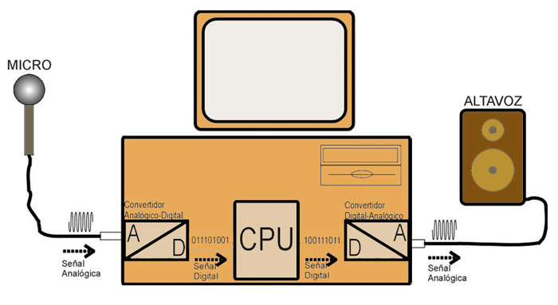

Actividad
Un ordenador es un dispositivo electrónico que recibe datos o
información de una determinada fuente externa, los procesa y es capaz de
almacenarlos y/o generar a partir de ellos una información diferente a la original.
Así el ordenador deberá realizar tres operaciones básicas:
Siguiendo este criterio un ordenador estará formado por los siguientes elementos funcionales:
|  |
| Imagen 12. Recurso propio. |
En el esquema anterior la unidad de entrada está formada por el micrófono que recoge el sonido original y el convertidor Analógico-Digital que produce a la señal digital. La señal es procesada en la CPU (amplificada, modulada, distorsionada...) y la salida se obtiene a través del conversor Digital-Analógico y el altavoz.
En los próximos apartados estudiaremos cada uno de estos componentes de forma más detallada. En primer lugar analizaremos la unidad central y proceso (CPU), a continuación estudiaremos las distintas unidades de entrada y salida que puede poseer un ordenador, estos elementos los agruparemos en la categoría de periféricos.
De una forma más detallada se puede mostrar la estructura lógica de un ordenador a través del siguiente esquema. En él las líneas continuas representan el camino seguido por los datos y las instrucciones que los manejan y las líneas discontinuas el camino seguido por las señales y comandos.
 |
| Imgane 13. Recurso propio |
Veamos más en detalle los componentes de la unidad central de proceso.